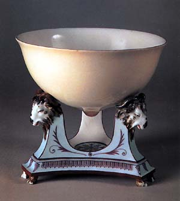
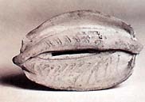
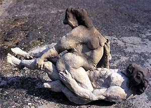
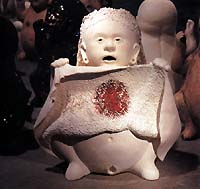

| In Print | |
| Paul Mathieu - Sex Pots In his book Sex Pots, Paul Mathieu grasps the bull by the horns and takes us on a journey to look at the influence of sex and sexuality in pottery of the past through to the present day. He observes that there is an "interesting predominance of ceramics in erotic representations worldwide" and traces the historical trail of erotic ceramics with their connections to daily life, social and religious rituals and the cycle of life and death. Many of these themes are as valid today as in previous ages and are expressed by a range of contemporary ceramists.  Mathieu begins his account of erotic ceramics with the justified lament: "I wish I did not have to write this book, that there was no real need for it", because other books on the topic of erotic art "largely ignore ceramics and other crafts ... and they usually include very few, if any, examples of ceramic objects". However, as the reader will discover, a great deal of ceramic artists past and present, many of them well-known, have dealt with sexual issues in their ceramics. In the following chapters Mathieu deals in depth with various aspects of sexuality in ceramics. The first chapter "Making Histories" covers sexuality in historical ceramics, beginning with the Neolithic (around 15,000 BC), Greek and Roman works, Pre-Columbian pottery, Asian works and other areas and eras up to the present. One wonders how Mathieu has found some of the pieces depicted here. Many of them are amusing, many erotic and - perhaps surprisingly - many are quite inspirational works from throughout the ages and representing all kinds of sexual practices. The research is meticulous and the results very enlightening. Amongst many other items, you will find a 'Male Genital Vessel' from Peru from around 400 BC and a 'Breast Bowl' (depicted above) from 18th century France. This is followed by a comparison of sexuality in Native American pottery and American ceramics of the present day, from Mimbres to Michael Lucero and others. Of course the Greeks should not be forgotten in any account of the history of erotic ceramics. Most of us are familiar with Greek 'Red on Black' and Bal ck on Red' wares and some of us may have seen images of sexuality on Greek pottery. Mathieu (deservedly) devotes a whole sub-chapter to the Greeks and Romans, but as with other chapters, interestingly and intelligently cross-references and compares the ancient works with contemporary pieces, drawing parallels from then to now. After a brief look at India and China, where sexual taboos have probably stifled such creativity to a degree, Mathieu moves on to an analysis of 19th and 20th century Western ceramics, in particular the works of George Ohr and Pablo Picasso (who by the way said "Art and sex, it's all the same"). Picasso, whose pottery plays an important, if underrated role in the history of ceramics, used sex as a theme in his paintings as well as in his clay work. George Ohr, also known as 'The Mad Potter of Biloxi', also used sexual themes in some of his sculptural work. Ohr created a 'Vagina Bank' (depicted above), which, as Mathieu says, "brings together power and sex, money and desire, with amazing directness". Ohr was inspired by feminine powers of creation and reproduction, a theme to be observed in many societies in regards to the relationship between pottery and sexuality. The second chapter, "Getting Lucky", was written by Catherine Hess, Assistant Curator, Department of Sculpture and works of Art at the Getty Museum, LA. Her analysis covers the heyday of Italian Maiolica, between the 15th and 17th centuries. Hess gives four main reasons for the depiction of sexuality in Italian maiolica (and these probably still apply today): as a depiction of pleasure; as a depiction of victimization or disgrace; as a depiction of dominating sexual desires; and as symbols of fertility. Mathieu's next chapter "Giving Meaning" deals mostly with contemporary works that deal with the sexual-political or social issues of our times. These range from sexual identity and orientation to women's rights, bodily functions, hygiene, power, rape, pornography, morality and HIV/AIDS. The chapter "Creating desire" deals with popular culture, common notions of beauty, objectification, advertising and merchandising, consumerism and desire. Here Mathieu talks about fame, mass-culture and in that respect, ceramics' relationship to sexuality. 'Telling Stories" deals with clay in creation myths, scatology, trans-gender and trans-sexual issues, while "Touching Bodies" discusses hygiene, sickness, death, body fluids, queer sexuality and gender roles. Mathieu discusses the idea of associations between vessel forms and the human body, a recurring theme in the book, in detail.  Chapter seven, "Growing things" deals with other, more ephemeral issues, such as transformation and change, transitions and permanence and what Mathieu refers to as 'Organic Formalism', in which he sees organic forms - plants, flowers, bacteria, geology and other 'organic systems' - as carriers of sexual references. Mathieu also touches upon another recurring theme - the sensuality and sexuality of clay and associated forming processes, perceived erotic gestures, forms and vocabulary as well as the vessel as manifestation or representation of the female form. Throughout the book, Mathieu intelligently supports his ideas with quotes from the likes of Immanuel Kant, Jean Baudrillard, Gilles Deleuze, Michel Foucault, Donald Winnicott and others. The contemporary artists represented are as diverse as they are surprising. They range from Grayson Perry (UK), who recently won the prestigious and controversial 'Turner Prize', to Patti Warashina (USA), and from Imre Schrammel (Hungary; depicted above)) to Léopold Foulem (Canada) to name a few. Actually there are too many artists to list here. And this is where surprise may set in - you may have come across a sexually themed work here or there, but Sex Pots is a real eye-opener as far as the prevalence of the theme in ceramics goes. Sexual references in the works presented are often subtle, but they are just as often direct and confronting. You may want to leave this book on your coffee table for some assured amusement and as a topic of conversation with visitors, but Sex Pots is no lightweight publication. The text is well-written and the images well chosen to illustrate the various topics and ideas presented. Mathieu can be congratulated for writing a comprehensive, well-researched book on a neglected topic. Sex Pots, Eroticism in Ceramics, by Paul Mathieu, was published by A&C Black in 2003. ISBN 07136-5804-5 More book reviews |
|
| © Ceramics Today |